Gerar visualizações de dados é tarefa comum em qualquer processo de análise. Inspecionar visualmente nossas variáveis nos permite observar padrões, detectar erros, identificar outliers, etc. Embora o R conte com sua máquina padrão para gerar visualizações, é possível obter gráficos muito mais elaborados e de maneira mais simples com o pacote ggplot2 que faz parte do tidyverse.
Nessa sessão teremos uma breve introdução ao ggplot2, um pacote muito útil que implementa a gramática dos gráficos (grammar of graphics), um sistema coerente e elegante na descrição e construção de visualizações. Veremos como gerar alguns dos tipos de visualizações mais comuns, bem como modificar aspectos estéticos e textuais dos nossos gráficos. Isso nos ajudará na nossa próxima sessão onde discutiremos estatísticas descritivas.
1The grammar of graphics
Todo gráfico em ggplot2 é construído em um sistema de camadas que se combinam para formar uma visualização de dados.
Créditos: https://lucidmanager.org/
Ao longo deste material provalmente utilizaremos todas as camadas da imagem acima, no entanto, nosso foco no momento são as camadas principais de Data, Aesthetics e Geometries.
Data: Aqui informamos qual conjunto de dados utilizaremos para o gráfico.
Aesthetics: Nesta camada mapeamos cada variável aos eixos X e Y do gráfico.
Geometries: Aqui decidimos qual tipo de gráfico (geometria) utilizar. Barras, Linhas, Pontos, Célula, etc.
Definidas estas três camadas, temos uma visualização básica em ggplot.
Importante!
Como mencionamos anteriormente, o ggplot usa um sistema de camadas, e por isso a ordem das camadas importa! Na construção do gráfico é como se empilhassemos uma sobre a outra, assim, a camada adicionada por último fica no “topo” da visualização.
2 Nosso primeiro plot
library(palmerpenguins, quietly = T)
Attaching package: 'palmerpenguins'
The following objects are masked from 'package:datasets':
penguins, penguins_raw
── Conflicts ────────────────────────────────────────── tidyverse_conflicts() ──
✖ dplyr::filter() masks stats::filter()
✖ dplyr::lag() masks stats::lag()
ℹ Use the conflicted package (<http://conflicted.r-lib.org/>) to force all conflicts to become errors
Para nossos exemplos nessa sessão vamos utilizar os dados do pacote palmerpenguins, caso não tenha o pacote pode instalá-lo com install.packages("palmerpenguins").
O pacote contém dados morfométricos de diferentes espécies de pinguins coletados em diferentes ilhas. Vamos dar uma olhada nos dados?
Vamos construir nosso gráfico passo a passo. Primeiro, vamos definir nossa primeira camada, a de dados. A função ggplot() é a que utilizaremos para construir nosso gráfico base, e todas as camadas subsequentes serão adicionadas, literalmente, ao nosso gráfico utilizando um + ao final de cada linha do gráfico.
ggplot(data = penguins)
Estranho? Nosso gráfico só exibe até o momento nosso canvas, é como se nosso gráfico fosse uma folha em branco. Vamos adicionar agora nossa camada de mapeamento dos dados (aesthetics).
Será que existe alguma relação entre as variáveis bill_length_mm e flipper_length_mm? Pinguins com um bico maior também possuem maiores nadadeiras?
Para isso vamos usar o argumento aes() dentro da nossa função ggplot() e mapear cada variável em um eixo do gráfico.
ggplot(data = penguins, aes(x = bill_length_mm, y = flipper_length_mm))
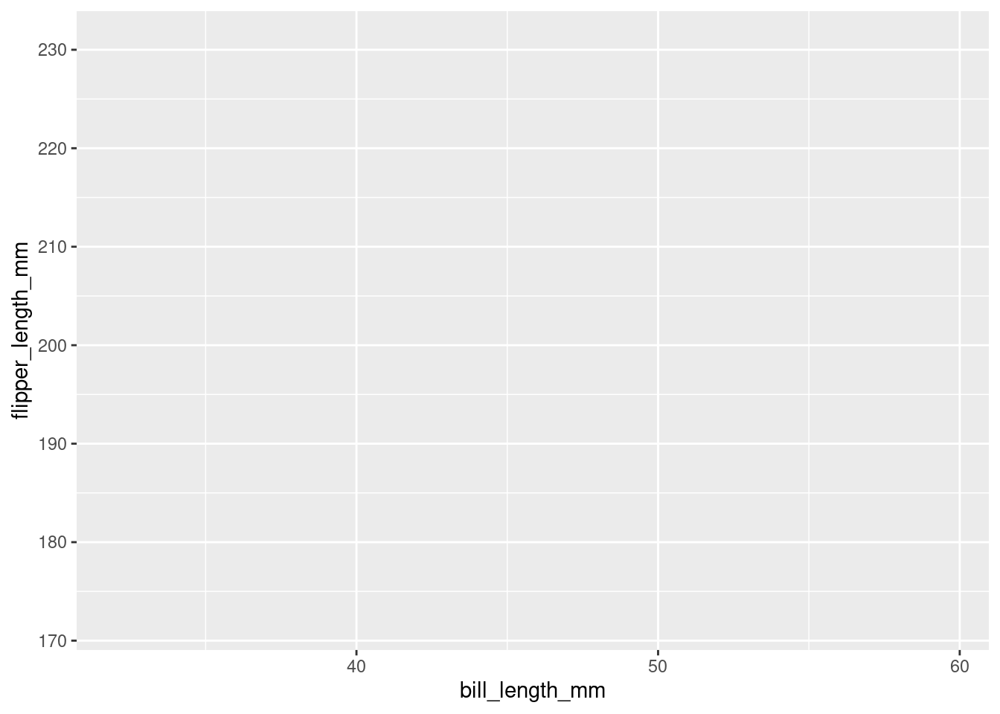
Nosso gráfico começa a tomar forma. Já podemos ver as unidades adicionadas em cada eixo, bem como os rótulos das nossas variáveis. Que tal utilizarmos um gráfico de pontos, ou gráfico de dispersão para observamos a relação entre essas duas variáveis? Para isso vamos adicionar agora uma camada de geometry de pontos com a função geom_point().
ggplot(data = penguins, aes(x = bill_length_mm, y = flipper_length_mm)) +geom_point()
Warning: Removed 2 rows containing missing values or values outside the scale range
(`geom_point()`).
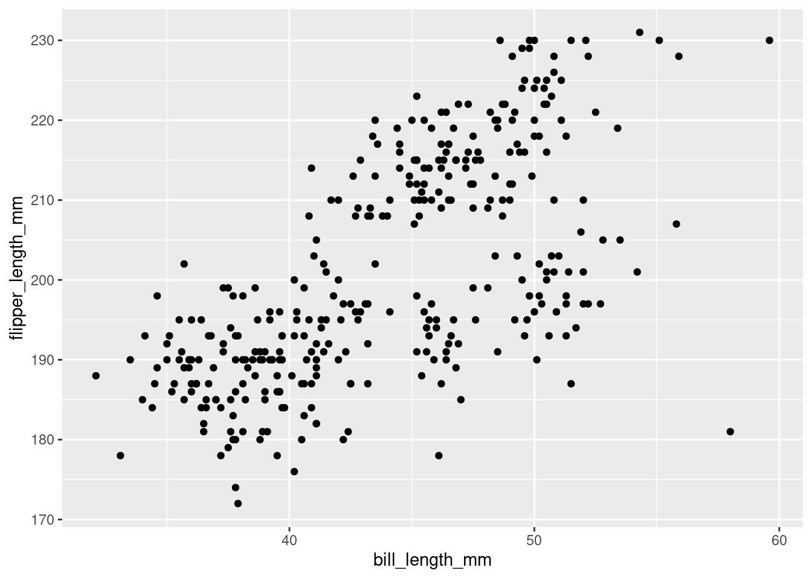
Realmente parece haver uma relação positiva entre as duas variáveis baseado na inspeção visual. Mas ainda podemos melhorar nosso gráfico.
Além de mapear nossas observações nos eixos, também podemos mapear variáveis categóricas facilitando assim a visualização de diferentes grupos nos dados. Para isso podemos declarar dentro do aes() uma variável categórica como species para colorir os grupos de observações.
Warning: Removed 2 rows containing missing values or values outside the scale range
(`geom_point()`).
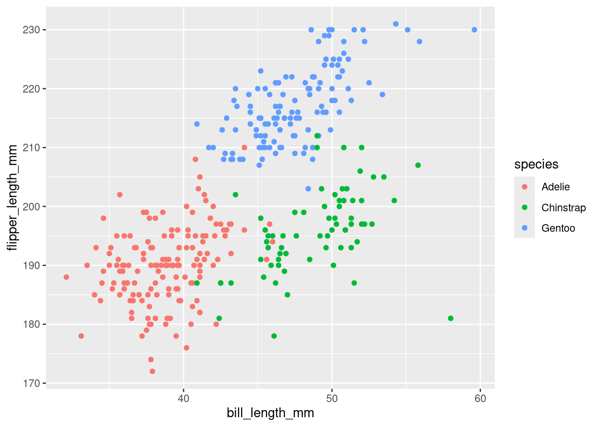
Muito mais intuitivo não? Além do atributo color, ainda podemos mapear categorias a outros atributos como shape, para mapear um tipo de ponto para cada grupo dentro de species. Vamos tentar?
Warning: Removed 2 rows containing missing values or values outside the scale range
(`geom_point()`).
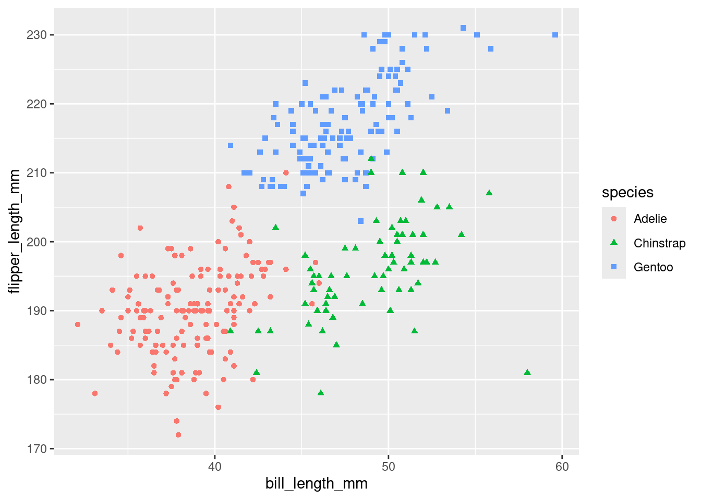
Simples não? Podemos também modificar atributos específicos da camada de geometria, como seu tamanho, opacidade, etc. Vamos aumentar um pouco o tamanho dos pontos no nosso gráfico para ficar mais legível, e diminuir a opacidade de modo que os pontos que estejam sobrepostos possam ser visualizados.
Warning: Removed 2 rows containing missing values or values outside the scale range
(`geom_point()`).
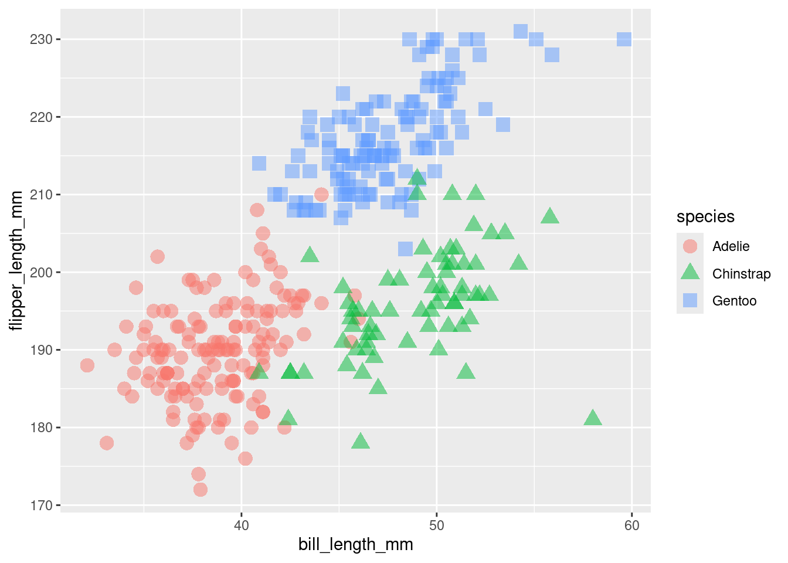
Podemos melhorar também a parte textual do nosso gráfico, incluindo um título principal, e também dando melhores títulos a nossos eixos. Para isso usamos outra camada, a de labs(), ou rótulos.
ggplot(data = penguins, aes(x = bill_length_mm,y = flipper_length_mm,color = species,shape = species)) +geom_point(size =4,alpha =0.5)+labs(title ="Relação entre Comprimento de Nadadeira e Bico em Pinguins de 3 espécies",x ="Comprimento do Bico (mm)",y ="Comprimento de Nadadeira",color ="Espécies",shape ="Espécies")
Warning: Removed 2 rows containing missing values or values outside the scale range
(`geom_point()`).
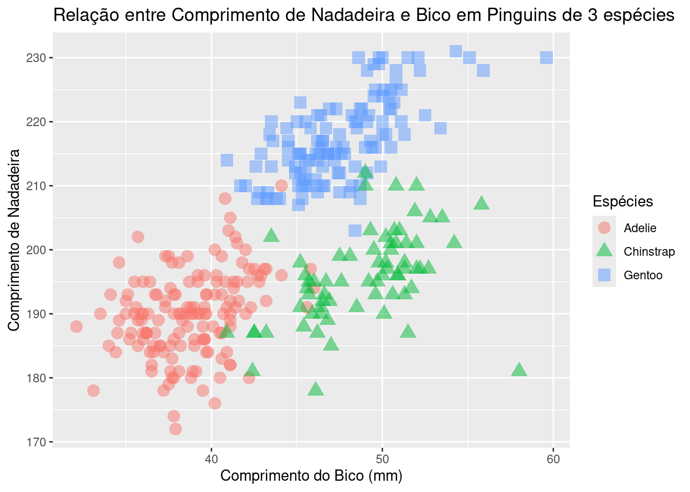
3 Geometrias
Outra visualização muito comum são gráficos de barra. A lógica segue a mesma, definimos os dados, o mapeamento e a geometria. Aqui temos uma diferença, já que queremos mapear em um dos eixos nossas espécies, e em outro nossa variável de interesse.
Warning: Removed 2 rows containing missing values or values outside the scale range
(`geom_bar()`).
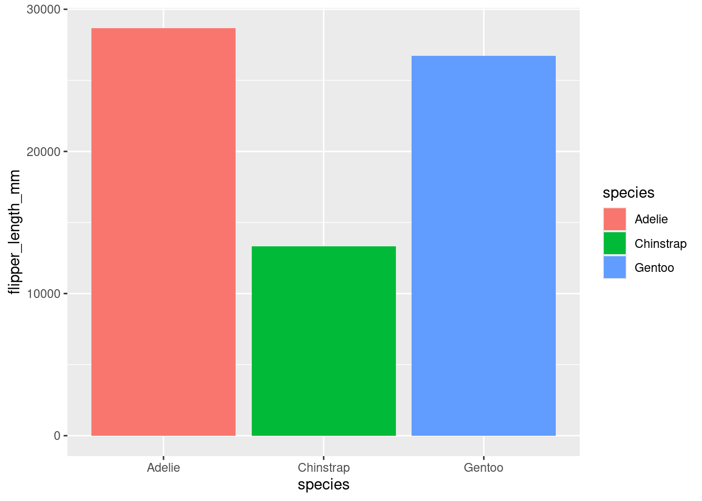
Aqui precisamos adicionar ao geom_bar() o argumento stat="identity", isso porque como não queremos calcular nenhuma estatística (frequência por exemplo), precisamos explicitar ao ggplot para que use os valores fornecidos pela nossa própria variável.
Em outras sessões veremos maneiras de manipular nossos conjuntos de dados de maneira que possamos plotar múltiplas variáveis em um único gráfico de barras.
Uma outra representação muito comum é o Histograma, que nos permite visualizar como estão distribuídas as observações de determinada variável. Podemos modificar diversos aspectos da geometria tornando o gráfico mais visualmente interessante.
`stat_bin()` using `bins = 30`. Pick better value with `binwidth`.
Warning: Removed 2 rows containing non-finite outside the scale range
(`stat_bin()`).
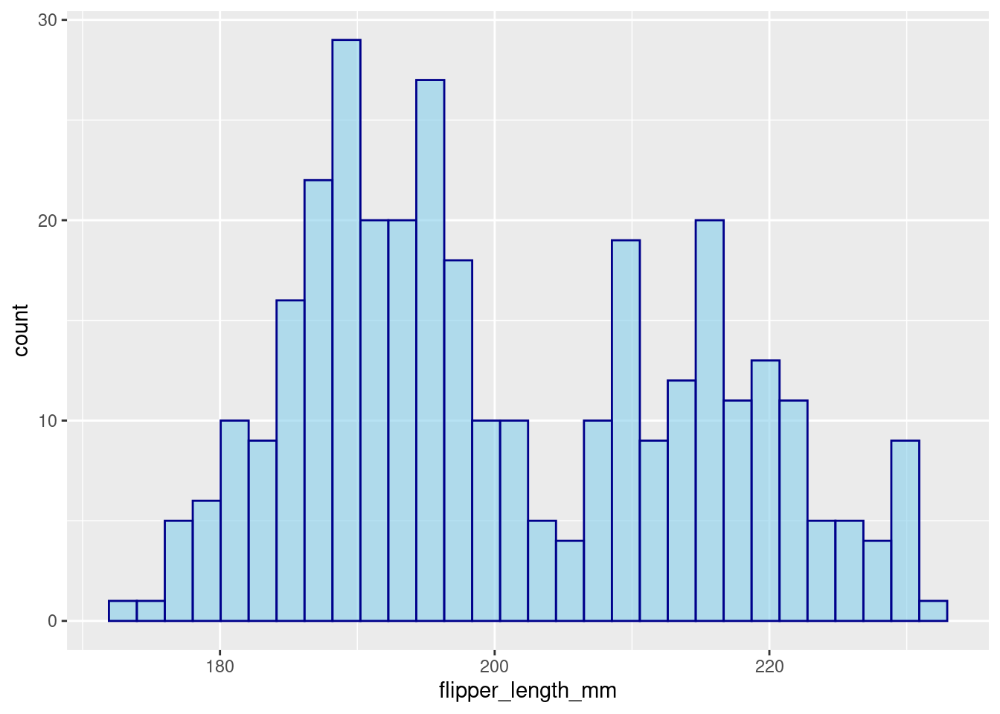
Gráficos de linha são excelentes visualizações para comparar mudanças ao longo de um gradiente como tempo, concentrações, etc. Para criarmos uma série de dados que possam ser plotadas em um gráfico de linhas vamos fazer algumas transformações nos nossos dados, mas não se preocupe se não entender as operações agora, ao longo do material você irá explorar esses conceitos e operações com detalhes.
Eu quero comparar como o peso corporal body_mass_g variou ao longo do tempo year entre as espécies.
penguins |>group_by(species,year) |>mutate(body_mass_kg = body_mass_g/1000) |>summarize(mean_bm =mean(body_mass_kg, na.rm =TRUE)) |>ggplot(aes(x =factor(year), y = mean_bm, group = species, color = species)) +geom_line(linewidth =1) +labs(title ="Peso corporal de Pinguins de 3 ilhas",x ="Ano",y ="Peso Médio (kg)",color ="Espécie:")
`summarise()` has grouped output by 'species'. You can override using the
`.groups` argument.
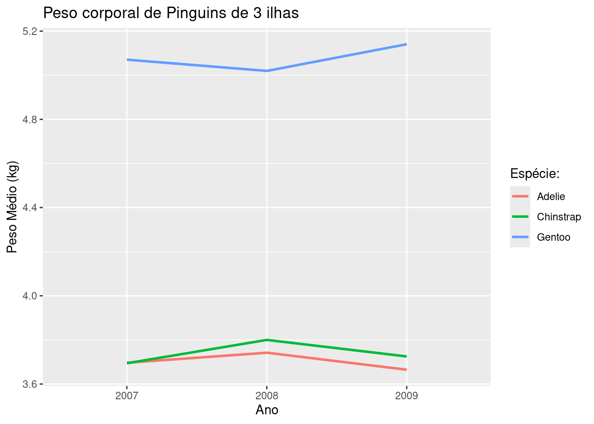
Uma outra camada do ggplot é a de temas. Podemos aplicar temas pré-definidos no pacote, ou em pacotes extras como ggthemes, bem como podemos construir temas do zero. Para utilizar um tema pré definido basta invocar theme_ e as opções aparecerão. Experimente e veja as diferenças e aplicabilidades de cada tema.
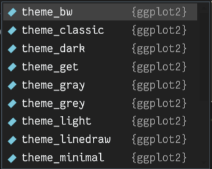
Não abordarei a construção de temas nesse material, mas é bem fácil encontrar na própria documentação do pacote como fazê-lo.
penguins |>group_by(species,year) |>mutate(body_mass_kg = body_mass_g/1000) |>summarize(mean_bm =mean(body_mass_kg, na.rm =TRUE)) |>ggplot(aes(x =factor(year), y = mean_bm, group = species, color = species)) +geom_line(linewidth =1) +labs(title ="Peso corporal de Pinguins de 3 ilhas",x ="Ano",y ="Peso Médio (kg)",color ="Espécie:") +theme_classic()
`summarise()` has grouped output by 'species'. You can override using the
`.groups` argument.
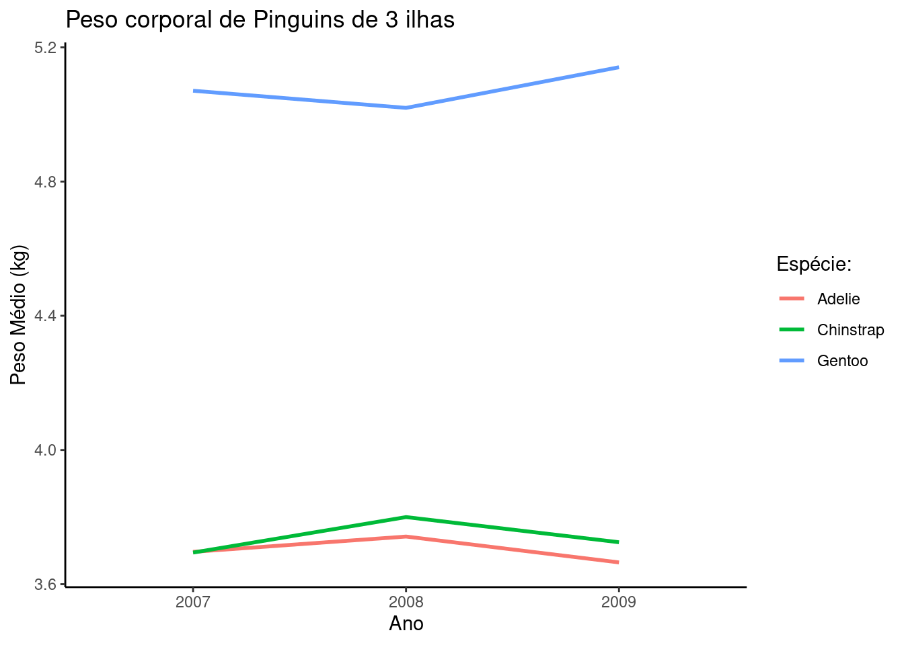
A versatilidade do ggplot permite a criação de visualizações de dados complexas e bastante informativas. Uma coisa importante é sempre ter em mente que planejar o objetivo de sua visualização é o mais fundamental. Uma vez que se sabe a ideia que desejamos transmitir, transformar os dados para o formato ideal e montar a imagem é bastante intuitivo. Ao longo deste curso praticaremos bastante a criação de gráficos.
![]()